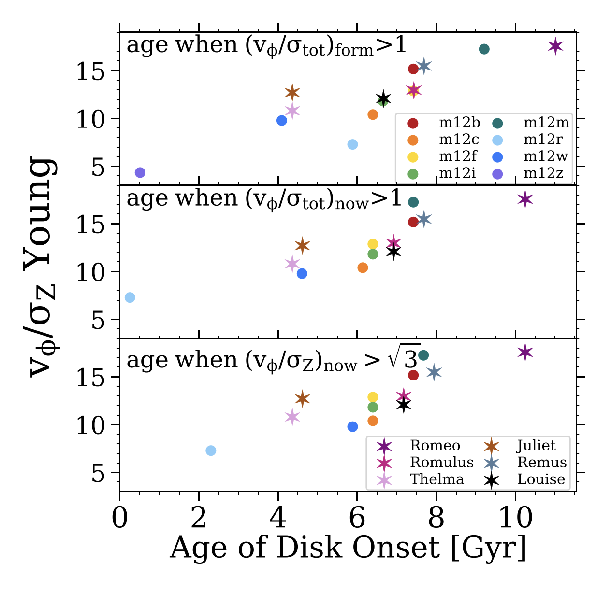

When do Disks Form in MW-mass galaxies?
On average, MW-mass galaxies in the FIRE-2 simulations form long-lived disks ~6 Gyr ago. While disk formation occurs between 4-8 Gyr ago in 12 of the 14 galaxies, one lower-mass galaxy (m12z) only formed its disk within the last Gyr, while a particularly MW-like system (Romeo) formed its disk ~11 Gyr ago.
The above Figure shows the degree of rotational support, vφ / σZ, (aka, the "disky-ness") of young stars (age < 250 Myr) versus the lookback time of disk onset for FIRE-2 MW-mass galaxies. Circles show isolated (m12) galaxies, and stars show galaxies in LG-like pairs. We examine 3 metrics to determine the time that each galaxy's disk started to settle, which yield similar but occasionally different times and ordering between galaxies. Top: disk onset time defined as age when vφ / σtot at formation permanently exceeded 1. Middle: disk onset time defined age as when vφ / σtot as measured today permanently exceeded 1. Bottom:: disk onset time defined age as when vφ / σZ as measured today permanently exceeded 1.8.
Overall, using kinematics at formation versus today or measuring different velocity components all lead to similar times of disk onset. Interestingly, all 3 metrics show that disks that started to settle earlier currently form stars on more rotationally supported orbits, which indicates that the MW, which is unusually dynamically cold today, may have started to settle unusually early.
See McCluskey et al. 2024 for further discussion of disk formation in the FIRE-2 simulations.